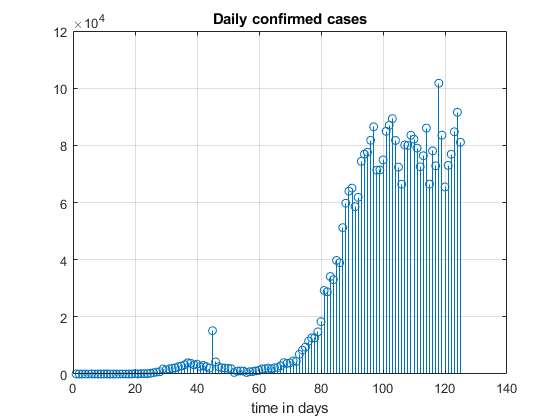
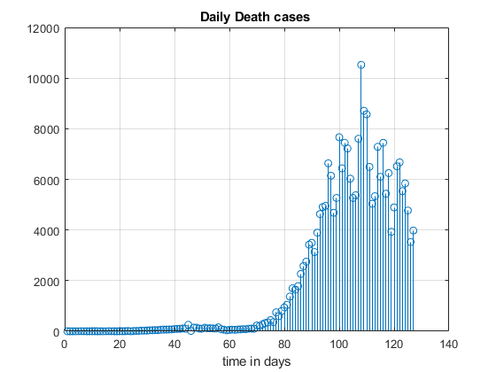
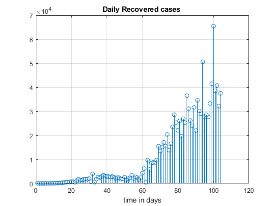
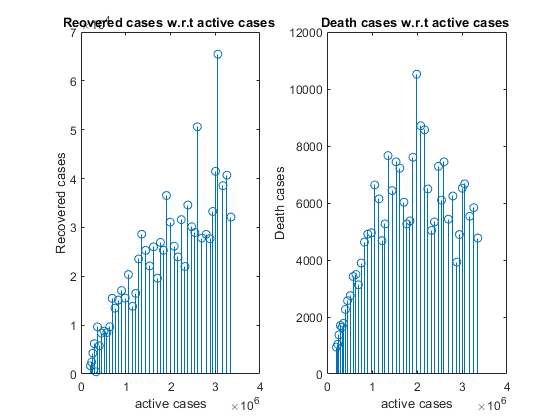
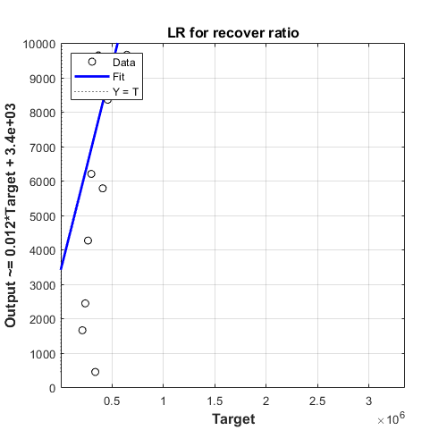
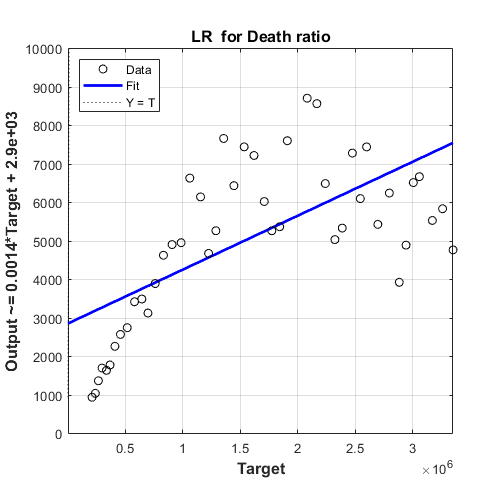

Contents
Reading the excel file
[num ,st, raw]=xlsread('total_cases.csv');
timeAxis= raw(2:end,1);
wwcases= num(:,1);
t=linspace(1,length(timeAxis),length(timeAxis));
[num1 ,st1, raw1]=xlsread('total_deaths.csv');
timeAxis1= raw1(2:end,1);
Dcases= num1(:,1);
t1=linspace(1,length(timeAxis),length(timeAxis));
[num2 ,st2, raw2]=xlsread('time_series_covid19_recovered_global.xlsx');
RecoveredCases= num2(253,3:end);
t1=linspace(1,length(RecoveredCases),length(RecoveredCases));
figure
Calculating the confirmed cases in each day indvidualy
confirmedCD=zeros(1,length(num(:,1)));
for i=1:length(num(:,1))
confirmedCD(i)=num(i,1);
for j=1:i-1
if (i~=1)
confirmedCD(i)=confirmedCD(i)-confirmedCD(j);
end
end
end
stem(confirmedCD)
title('Daily confirmed cases')
grid on
xlabel('time in days')

Calculating the Death cases in each day individualy
DeathCD=zeros(1,length(num1(:,1)));
for i=1:length(num1(:,1))
DeathCD(i)=num1(i,1);
for j=1:i-1
if (i~=1)
DeathCD(i)=DeathCD(i)-DeathCD(j);
end
end
end
figure
stem(DeathCD)
title('Daily Death cases ')
grid on
xlabel('time in days')

Calculating the recovered cases in each day individualy
for i=1:length(RecoveredCases)
RecoveredCD(i)=num2(253,i+2);
for j=1:i-1
if (i~=1)
RecoveredCD(i)=RecoveredCD(i)-RecoveredCD(j);
end
end
end
figure
stem(RecoveredCD)
title('Daily Recovered cases ')
grid on
xlabel('time in days')

Normalize the the vectors by getting vectors starting from 15/3
NRC= RecoveredCD(58:end-1);
NDC= DeathCD(80:end-2);
NIC= wwcases(80:end);
for i=1:length(NRC)
NIC(i)=NIC(i)-NRC(i)-NDC(i);
end
subplot(1,2,1)
stem(NIC, NRC);
title('Reovered cases w.r.t active cases ');
xlabel('active cases');
ylabel('Recovered cases');
subplot(1,2,2);
stem(NIC,NDC);
title('Death cases w.r.t active cases ');
xlabel('active cases');
ylabel('Death cases');

making linear regression
figure
plotregression(NIC,NRC)
title('LR for recover ratio')
ylim([0 1e4])
grid on
figure
plotregression(NIC, NDC)
grid on
title('LR for Death ratio')
ylim([0 1e4])
 